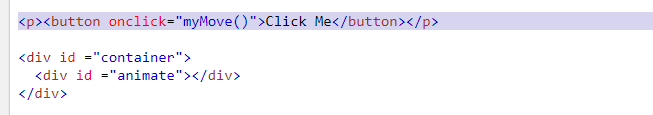
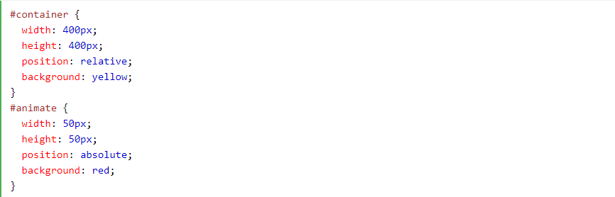

Javascript Animation Tutorial...
Apa itu Java script?
JavaScript adalah salah satu bahasa pemrograman yang paling banyak digunakan dalam kurun waktu dua puluh tahun ini. Bahkan JavaScript juga dikenal sebagai salah satu dari tiga bahasa pemrograman utama bagi web developer.
Kali ini kita akan belajar membuat animasi sederhana JavaScript
Mari langsung masuk ke dalam codenya
Untuk kode htmlnya ada di bawah ini :
untuk kode CSS kalian bisa lihat di bawah ini :
Untuk kode JavaScriptnya bisa kalian lihat dibawah ini:

Nah itu temen temen kodenya silahkan kalian coba sendiri untuk memastikan kodenya berjalan atau tidak
Jika kode kalian jalan akan menghasilkan seperti di bawah ini :
Cara kerja :Animasi JavaScript dilakukan dengan memprogram perubahan bertahap dalam gaya elemen. Perubahan itu disebut dengan timer. Ketika interval timer kecil, animasi terlihat terus menerus. Selain itu juga dalam CSS nya diharuskan untuk position :relative agar posisi kotak dapat bergrak tidak berdiam di tempat seperti absolute.